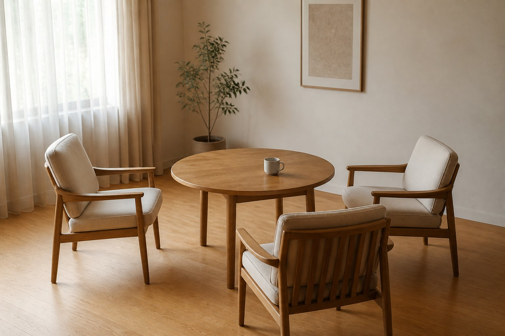

Tea Room
柚木会客空间氛围怎么做
从尺度、光线、座椅、茶桌和留白理解会客氛围。

这个方向怎么看
会客空间看重舒适和稳定，不是越满越好。
查看具体产品时，再核对企业说明、合同、交付和售后内容。
建议优先确认的五件事
建议关注坐感、视线、动线和收纳。 具体产品和服务仍需结合企业说明、合同、交付和售后内容确认。
空间参考怎么看
空间参考可以帮助你看清尺寸、材料、维护和实际使用之间的关系。
如果你正在看柚木茶室空间，可以把这些空间内容理解成场景参考：它帮助你把空间用途、材料工艺和服务说明放在一起比较。
比较时先看空间和用途，再看材料工艺，最后核对服务说明。
相关内容
- 茶室为什么适合柚木：从触感、温润感、稳定感和空间氛围理解茶室场景。
- 柚木茶桌怎么选：从尺寸、结构、桌面处理、坐姿和使用频率看茶桌。
- 茶室地面和柜体如何搭配：整理地面、柜体、茶具收纳和墙面之间的搭配方式。
- 柚木茶室空间参考：说明茶室参考页应如何组织空间、材料和图片来源信息。
- 返回柚木茶室空间专题：回到本类别内容。
参考资料与说明
比较产品或服务时，还要核对图片来源、服务区域和交付范围。